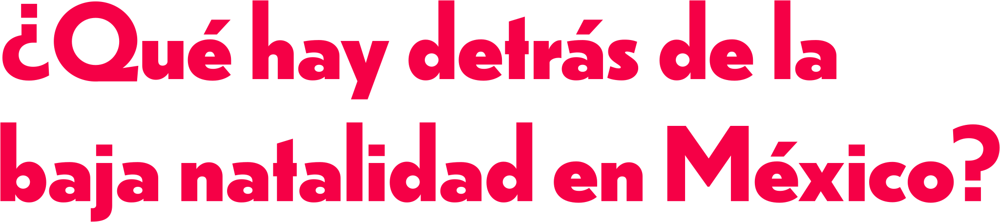
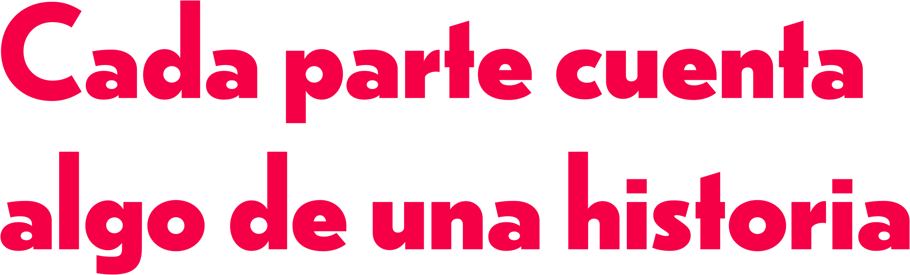

UN RETRATO DE LA GENERACIÓN Z
Explora cómo las emociones, experiencias y condiciones de una generación se conectan al momento de pensar en tener, postergar o no tener hijos.

Un retrato de la Generación Z

Hay decisiones que no solo se piensan:también se sienten.
Tener, postergar o no tener hijos puede dejar dudas, miedos, expectativas y deseos que atraviesan el cuerpo de distintas maneras.
TU RECORRIDO 0 de 6 zonas
✳ No hay una sola manerade imaginar el futuro.
Explora cada parte
Esta experiencia necesita JavaScript para mostrar el títere y explorar los datos.